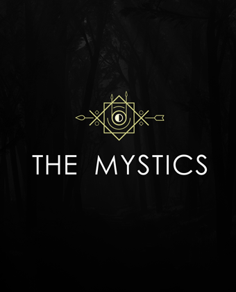
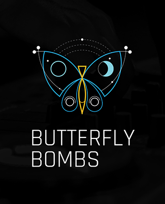

Main motive in my design is the reverse question mark, which is a silhouette of a wine bottle at the same time. Inspiration was a Moldovan wine and culture, which is still quite undiscovered for connoisseur of wines. The design is very modern and really interesting.
Moldova Deluxe / FINALIST
Wine / label
#99 design contest entry
Main motive in my project connects two major points in one icon. There is zebra crossroad (Shibuya Crossroad) with photographic film unite in the logo. Cine-film is ragged from both sides. That is a suggestion there is an only a short section of the full-length film.
Shibuya Street Cinema 2200
WINNER / logo design
Short Film Festival Event
#99 design contest entry
Inspiration was a creative process when everyone forgets about earthbound things like food, sleep, other simple pleasures etc. There are only an artist and a piece of paper, and nothing else matters. His passion and love for the draw, painting or any other art style is everything that he needs right now. So like on this cover pencil substitute food. Everything is right here, in this pad.
Arttec / FINALIST
Fine art pads / cover
#99 design contest entry
When I saw this project, I really wanted to create a kind of mystic symbol. Something unique and enigmatic. I used some not obvious, different symbols and connect them into one. And the half-moon in the circle with clock pendulums is my favourite. This logo is absolutely one of a kind.

The Mistics
Indie rock band / logo
#99 design contest entry
I've created a kind of abstract face. I used all of the letters from the phrase "17th Season Curtain Call Theatre !". Looks modern and quite funny in sort of way.
Curtain Call Theatre
Community Theatre / Tote bag
#99 design contest entry
Four "M" letters connected themselves and make together a square shape. It's simple and pure, but also looks mysterious and interesting like their music.
Manifest * Nexto Me
Downtempo & hip hop band / logo
#99 design contest entry
The client mentioned in contest invite, that he wants me to prepared something in THE MYSTERY logo style. I used the primary theme butterfly and bomb (in the middle) and put in the design. I choose blue and white as the main colors.

Butterfly Bombs / Logo
Producer/DJ
#99 design contest entry
This is the variation about geometry optical illusion. I used the letter I and S to create this custom shape. Modern, simple and make sense

Illusions of Sound
Music festival / logo
#99 design contest entry
Simple and modern logo. I used triangles cut from letter W and M separated angled colon. Looking really good as a symbol paired with the type-logo and a stand-alone. Really catchy and simple to remember.
WESTMOOR
Rock/Pop/Alternative band / logo
#99 design contest entry
In this project, I connect major letters of client name H and J into the custom shape, adding a jumping dot between them. Looks minimal, clean and modern. I used a nice and trendy color palette.
Hopjump / logo
Travel company
#99 design contest entry
I designed a modern logo for Jennifer. I used basic geometrical shapes to match them into her name. It's simple but very compelling. I played with colors of late sunset, like: blue, purple and pink to make a pleasurable frame of mind.
KUDO / logo
Music Producer & Artist
#99 design contest entry